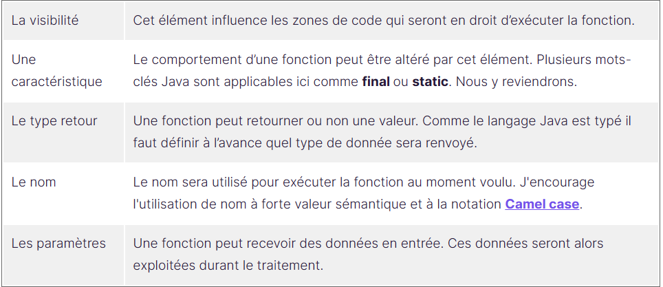
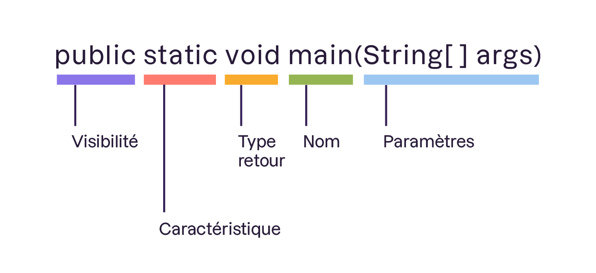
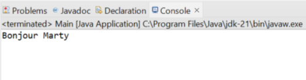

Nous continuons notre préparation pour le projet Epicrafter’s Journey en complétant notre boîte
à outils.
Marc revient vers vous et nous demande de progresser :
Après avoir vu la notion de variable, il est temps d’apprendre à exécuter des traitements grâce aux
fonctions.
C’est
l’heure d’aller de l’avant !
Ni une ni deux, vous vous plongez dans cette nouvelle thématique !
Une fonction est un traitement, c’est-à-dire, une suite d’instructions.
Une fonction possède :
La signature d’une fonction suit un schéma standard en 5 éléments :
La visibilité : Cet élément influence les zones de code qui seront en droit
d’exécuter la
fonction.
Une caractéristique: Le comportement d’une fonction peut être altéré par cet
élément. Plusieurs
mots-clés Java sont applicables ici
comme
final ou static. Nous y reviendrons.
Le type retour: Une fonction peut retourner ou non une valeur. Comme le
langage Java est typé
il faut définir à l’avance quel
type de
donnée sera renvoyé.
Le nom: Le nom sera utilisé pour exécuter la fonction au moment voulu.
J'encourage
l'utilisation de nom à forte valeur
sémantique et à la notationCamel case.
Les paramètres : Une fonction peut recevoir des données en entrée. Ces données
seront alors
exploitées durant le traitement.
Voici un exemple : public static void main(String[] args)
Mais nous l’avons déjà vu cette fonction !
Absolument, maintenant nous sommes en mesure d'interpréter sa signature :
Certaines de ses notions sont directement liées à la programmation orientée objet que l’on étudiera plus tard
dans le
cours.
Pour l’instant, vous pouvez considérer que la visibilité public permet à notre
fonction d’être exécutées depuis
d’autres
fichiers et que le mot-clé static nous simplifie l’appel de la
fonction. D’ailleurs nous
utiliserons ces deux
aspects
tout au long du chapitre.
Le type retour void est particulier car il signifie que la fonction ne retourne pas de valeurs.
Et comment fait-on appel à une fonction ?
Excellente question ! Étant donné que nous utilisons pour l’instant des méthodes statiques, alors la syntaxe est
: [Nom
de classe].[Nom de la méthode]. Par exemple, si une fonction nommée test est codée dans une classe nommée Main,
le code
sera :
Main.test();
Allez, passons à la pratique !
Je vous propose d'écrire une fonction qui :
Sauriez-vous définir la signature ? Allez je vous aide ce coup-ci : public static void
affiche()
Les parenthèses () sont vraiment le point précis qui nous aide à identifier en un coup d'œil qu’il s’agit d’une
fonction.
Et que dire de son implémentation ? La voici : (c.f IDE VSCode,
Lessons\coursOpenclassrooms\apprendreAProgrammerEnJava\lessonsOpenclassroomsJavaApplicationEJ\src\Affiche.java)
Pour rappel l’instruction System.out.println() permet d’afficher dans la console du texte comme vu lors d’une démonstration précédente.
Cela a l’air simple en fait Java. Rassurez-moi, il y a moyen de faire des choses plus compliquées ?
Je l'admets : c'était vraiment une fonction simple. Alors ajoutons un peu de complexité avec les paramètres.
Reprenons
la fonction précédente et faisons en sorte que le texte affiché dans la console soit récupéré en paramètre de la
fonction : (c.f IDE VSCode,
Lessons\coursOpenclassrooms\apprendreAProgrammerEnJava\lessonsOpenclassroomsJavaApplicationEJ)
Notez que le paramètre est écrit entre les parenthèses de la fonction.
On dirait une variable, non ?
Je vois que vous êtes de fins observateurs. Absolument ! Un paramètre n’est rien d’autre qu’
une variable et sera
donc
composé d’un type et d’un nom. La portée de la variable est la fonction.
En
dehors de la fonction
impossible d’y
accéder.
Voyons un autre exemple dans la démonstration suivante :
Pas mal, n’est-ce pas ? Nous pouvons retenir :
Il existe de nombreuses bonnes pratiques en programmation Java, j’essayerais d’en indiquer le plus possible au
fur
et à
mesure de ce cours.
Voici le code écrit : (c.f IDE VSCode,
Lessons\coursOpenclassrooms\apprendreAProgrammerEnJava\lessonsOpenclassroomsJavaApplicationEJ)
Voyons à présent une certaine catégorie de fonctions : les fonctions récursives.
Une fonction récursive est une fonction qui s'appelle elle-même !
Dans quelle situation
est-ce nécessaire ?
Principalement lorsque l’on souhaite éviter un code répétitif pour exécuter une chaîne de traitement où chaque
traitement est le même mais avec des paramètres d’entrée différents. Voici un exemple :
Decompte(valeur) {
Affiche la valeur
Appel Decompte(valeur-1)
}
J’ai volontairement écrit enpseudo-code (également appelé LDA pour Langage de
Description d'Algorithmes) ici pour
que vous vous concentriez sur la logique du traitement et non sur
la
syntaxe du Java.
Le but de cette fonction est de réaliser un décompte. À chaque fois qu’on rentre dans
la
fonction
on
affiche la valeur puis on appelle la même fonction en transmettant en paramètre la valeur moins
un. Ainsi chaque
appel
aura un résultat différent.
Mais ce code a un problème ! Il s’exécutera sans fin (ou plutôt jusqu’à ce
qu’on ait consommé
toute la mémoire
disponible pour notre application).
Pour résoudre ce point, une fonction récursive doit avoir un critère d’arrêt.
Complétons la fonction :
Decompte(valeur) {
Si la valeur est supérieure ou égale à 0
Alors
Affiche la valeur
Appel Decompte(valeur-1)
}
Au moment où la valeur atteindra -1 alors la fonction ne s’appellera plus elle-même et le
traitement sera
arrêté.
Voici le code en Java : (c.f IDE VSCode,
Lessons\coursOpenclassrooms\apprendreAProgrammerEnJava\lessonsOpenclassroomsJavaApplicationEJ)
On n'a pas vu cette instruction if, c’est quoi ?
En effet ! Comme critère d’arrêt j’ai utilisé ce qu’on appelle une condition
en programmation. Suivez-moi dans
le
prochain chapitre pour que je vous explique précisément ce point.
Intéressé par des exemples de fonctions récursives ? Penchez-vous sur le calcul d’une factorielle ou de la suite
de
fibonacci. (ressource en anglais)
Marc :
Alors tu t’en sors avec les fonctions ? Tiens, je te propose un exercice de programmation. Essaye de créer une
fonction
paramétrée qui permet d’afficher un texte dans une console.
Je vais t’écrire une consigne.
Dans le même projet que pour le chapitre précédent, complétez le code en suivant la consigne suivante.
Le résultat dans la console sera :
Retrouvez la correction dans ce repository GitHub.
Utiliser des variables et exécuter des fonctions sont une base indispensable. Maintenant voyez d’autres outils pour manipuler nos variables au sein des fonctions !